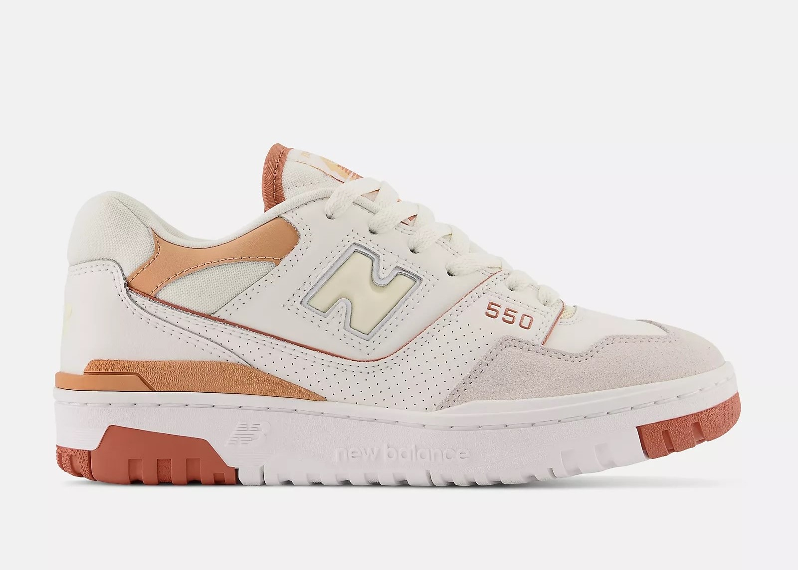

New Balance 550 White Au Lait
A hagyományos New Balance stílusú cipő frissített változata fehér és barna gumi talppal rendelkezik. Krémszínű alapon semleges árnyalatok variálódnak. A lábujjaknál szürke foltok találhatók, míg a saroknál földszínű szövetdarabok díszítik a cipőt.